السلسلة 45
السيارة (صنف B) · 40 سؤال. كل سؤال فيه الصورة والصوت. اختار الجواب (ولا جوج إلا كانو صحاح)، ورك على «تأكيد» باش تشوف واش صبتي.
- 40سؤال
- 32باش تنجح
- 1 – 4جواب واحد ولا أكثر
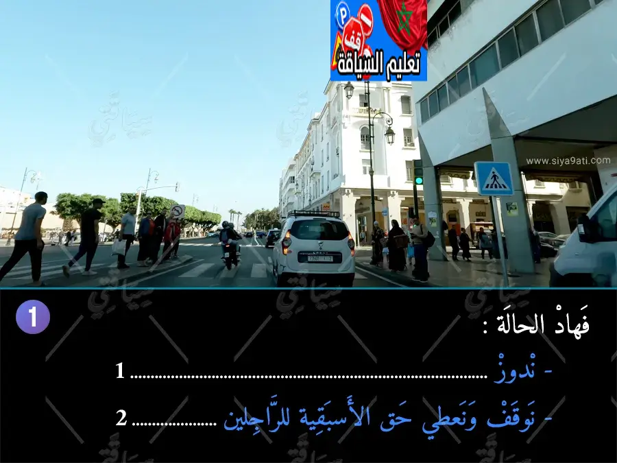
الكلافيي: 1–4 للجواب، Enter للتأكيد وللسؤال الجاي.
السلسلة 45 · النتيجة ديالك
0 / 40
السلسلة 45
السيارة (صنف B) · 40 سؤال، بالصوت، مع الجواب الصحيح والشرح.
السؤال 1
بيّن الجواب
الجواب الصحيح: 1
فهاد الحالة، الضوء الأخضر شاعل للسائقين، وهذا كيعني أن السائقين عندهم الأسبقية في المرور. رغم وجود علامة إرشادية كتعلم بوجود ممر الراجلين، إلا أن الراجلين خاصهم يحترمو الإشارة الضوئية الخاصة بالسيارات ويوقفو حتى يولي أحمر باش يقدرو يقطعو الطريق بأمان. 🚗 الجواب الصحيح هو: 1 – ندوز ⚠️ والراجلين خاصهم ينتظرو حتى تكون عند السيارات ضوء أحمر. يعني، الإشارات الضوئية كتسبق على الإشارات الأخرى، وكتحدد الأولوية بشكل واضح. إذن الجواب الصحيح هو ندوز رقم 1.
السؤال 2
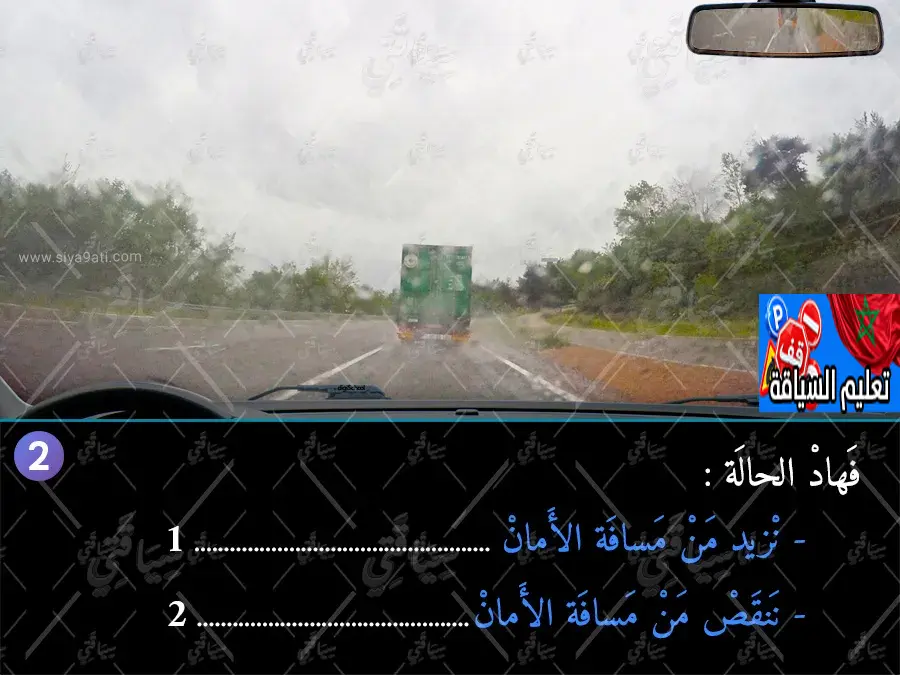
بيّن الجواب
الجواب الصحيح: 1
فاش كنسوق قريب بزاف من شاحنة، وخصوصاً فالشتا، الرؤية كتكون محدودة بزاف بسبب الرذاذ والماء اللي كيطير من العجلات. وهاد الشي كيزيد من خطر ما نشوفش مزيان واش كاينة شي حاجة قدامي. باش نسوق بأمان، خاصني نزيد فالمسافة بيني وبين الشاحنة، باش نكون عندي وقت كافي للفرملة، ونشوف الطريق بوضوح. هادي هي الطريقة الصحيحة لتفادي الحوادث فالظروف اللي فيها الأمطار. ✅ إذن الجواب الصحيح هو رقم 1.
السؤال 3
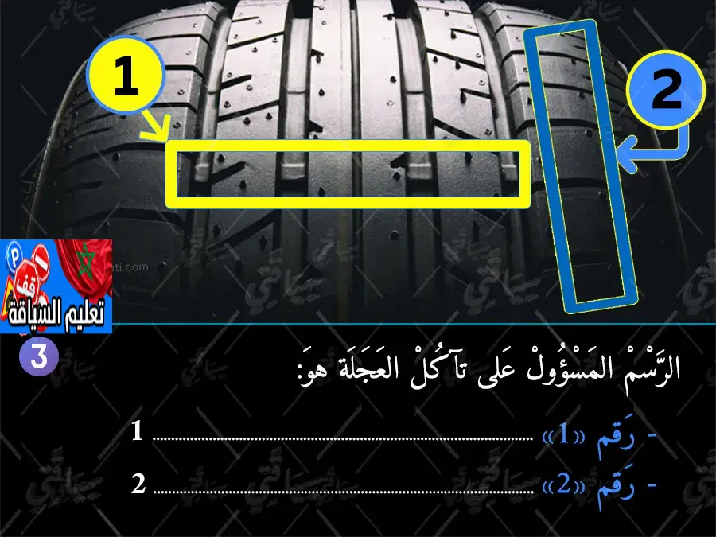
بيّن الجواب
الجواب الصحيح: 1
هادو هما الرموز أو العلامات اللي كيبينو واش العجلة ولات مهلوكة ولا باقي صالحة للاستعمال. فاش يوصل سطح الإطار لنفس مستوى هاد العلامات، فهذا كيعني أن العجلة خاصها تتبدل، لأنها ما بقاتش كتضمن تماسك جيد مع الطريق، خصوصاً فالشتا أو فالمنعرجات. 📏 الحد الأدنى لعمق النقش القانوني فالمغرب هو 1.6 ملم، وأقل من هاد الرقم كيولي استعمال العجلة مخالف وخطير. ✅ إذن، الرمز المسؤول على تحديد تآكل العجلة هو الرسم الموجود في الرّقم 1. الجواب الصحيح هو رقم 1.
السؤال 4
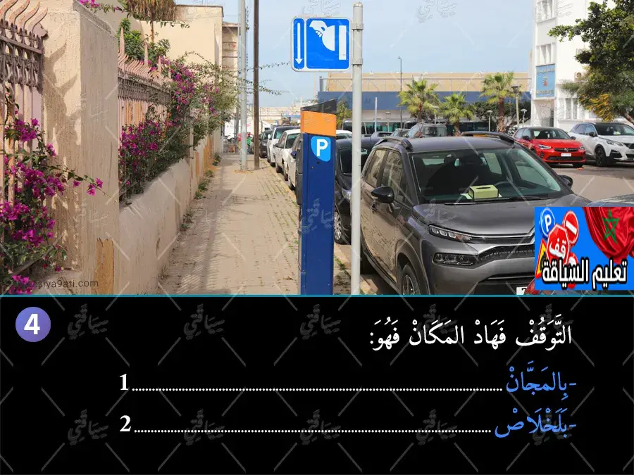
بيّن الجواب
الجواب الصحيح: 2
التوقّف في هذا المكان فهو بالآداء (بلخلاص)، العلامة الواضحة في الصورة زرقاء وبها يد مع قطعة نقدية فهي تعني ان التوقّف بالآداء. إذن، الجواب الصحيح هو رقم 2.
السؤال 5
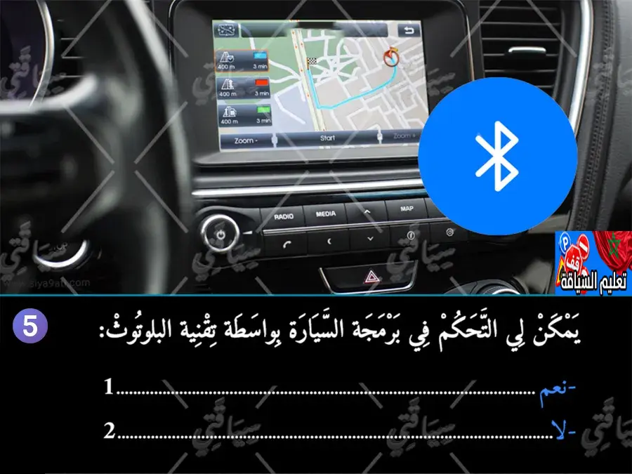
بيّن الجواب
الجواب الصحيح: 2
تقنية البلوتوث في السيارة تُستخدم فقط لربط الأجهزة مثل الهواتف لتسهيل وظائف مثل المكالمات أو تشغيل الوسائط الصوتية. البلوتوث لا يتيح التحكم في برمجة السيارة، حيث إن هذا النوع من التحكم يتطلب أجهزة أو أنظمة متخصصة مبرمجة من المصنع أو أدوات خارجية متصلة بالسيارة مباشرة. إذن الجواب الصحيح هو رقم 2.
السؤال 6
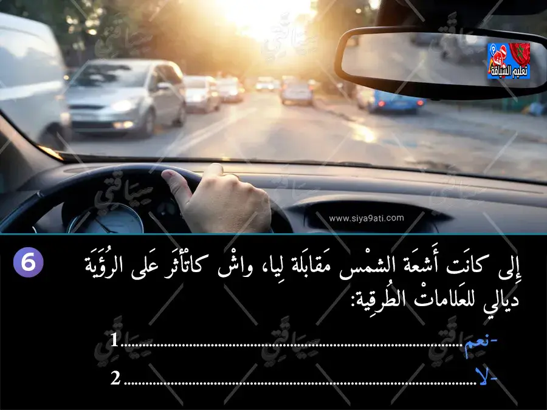
بيّن الجواب
الجواب الصحيح: 1
نعم، إلى كانت أشعة الشمس مقابلة للسائق، فهي كاتأثر فعلاً على الرؤية ديالو للعلامات الطرقية. فهاد الحالة، كاتولي الإشارات ما بايناش مزيان بسبب الضوء القوي اللي كيدخل مباشرة للعين، وهادشي كينقص التركيز وكيزيد من خطر ارتكاب خطأ في السياقة. باش نتفادى هاد المشكل، خاص السائق يستعمل الحاجب الشمسي، وينقص من السرعة ويبقى مركز، خصوصاً فالفترات اللي الشمس كتكون نازلة، بحال الصباح أو مع الغروب. إذن الجواب الصحيح هو رقم 1.
السؤال 7
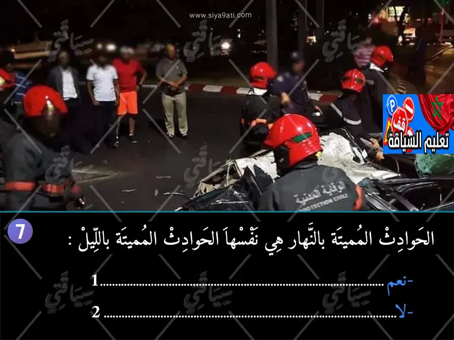
بيّن الجواب
الجواب الصحيح: 2
الحوادث اللي كاتوقع بالليل كتكون أكثر خطورة ومميتة مقارنة مع النهار، وذلك بسبب انخفاض الرؤية وتأثير التعب والإرهاق على السائقين. بالليل، الأضواء ديال السيارات ما كتكونش كافية باش توضح كل تفاصيل الطريق، وهادشي كيزيد من خطر الاصطدام، خاصة في الطرق اللي ما فيهاش إنارة مزيانة. كذلك، السائقين بالليل كيتعرضو للإبهار بسبب أضواء السيارات الأخرى، الشي اللي كينقص من رد الفعل ديالهم. من جهة أخرى، التعب والنعاس بالليل كيزيدو من احتمال فقدان التركيز، بحيث بزاف ديال السائقين كيكونو مرهقين أو كيسوقو لمسافات طويلة بلا راحة. إضافة إلى ذلك، بعض السائقين كيستعملو السرعة المفرطة في الليل حيث كيكون الطريق فارغ نسبياً، وهذا كيزيد من خطورة الحوادث. ✅ بالمقابل، الحوادث اللي كاتوقع بالنهار كاتكون أقل خطورة حيث الرؤية كتكون واضحة، والسائقين كيشوفو مزيان إشارات المرور، الراجلين، والعوائق اللي فالطريق، مما كيعطيهم فرصة أحسن باش يتفادو الخطر. إذن الجواب الصحيح هو رقم 2، الحوادث اللي في النهار ماشي بحال الحوادث اللي في الليل.
السؤال 8
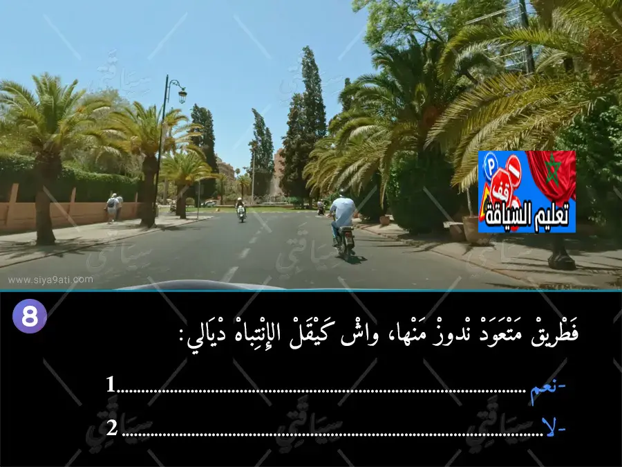
بيّن الجواب
الجواب الصحيح: 1
نعم، إلا كنت كنسوق فطريق ديما كنمشي منها، الانتباه ديالي كيقدر ينقص بلا ما نحس، حيت كنكون حافظ الطريق ومطمئن بزاف، وهذا كيجعلني ما نركزش مزيان على المخاطر اللي تقدر توقع. 🚨 هادشي خطير، حيث حتى فطريق معتاد عليها، تقدر تكون مفاجآت بحال راجلين، سيارات كتوقف فجأة أو دراجات كاتحرج فجأة، ولا تغييرات فالطريق. خاصني نبقى مركز ونسوق بحذر كيفما كنكون فطريق جديدة، باش نتفادى الحوادث. إذن الجواب الصحيح هو رقم 1.
السؤال 9
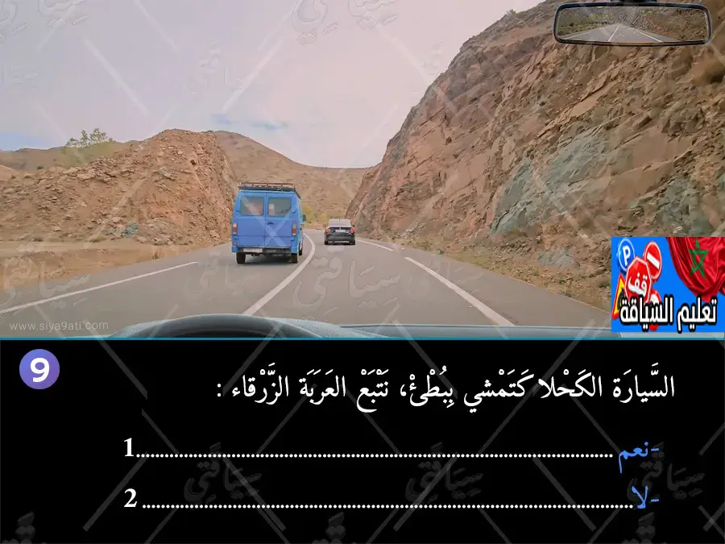
بيّن الجواب
الجواب الصحيح: 2
فهاد الحالة، العربة الزرقاء كتحاول تجاوز السيارة السوداء في منعطف رغم وجود خط متصل، وهذا خطر بزاف لأن الرؤية ناقصة، ويمكن تصطدم بسيارة جاية من الجهة المقابلة. 🚨 التجاوز فوق خط متصل مخالفة من الدرجة الأولى، وكيترتب عليها سحب 4 نقاط من رخصة السياقة وغرامة 700 درهم. التجاوز عند الخط المتصل ممنوع حيث الطريق ما كيبانش مزيان، خاصني نخفض من السرعة ديالي ونخلي مسافة أمان كافية بيني وبين السيارة الكحلا حتى نوصل لمكان مسموح فيه بالتجاوز. إذن الجواب الصحيح هو رقم 2.
السؤال 10
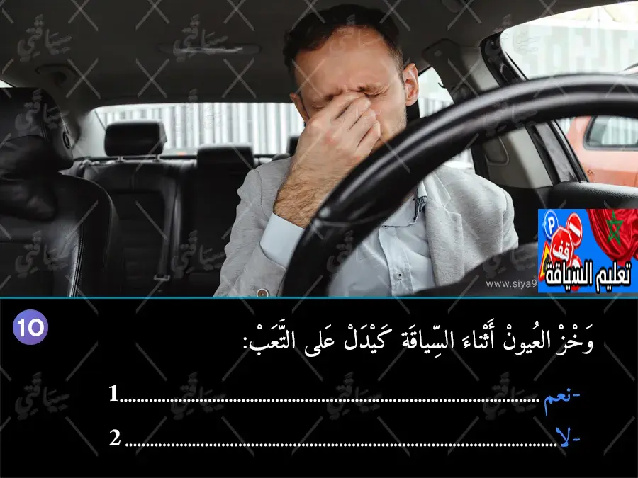
بيّن الجواب
الجواب الصحيح: 1
وخز العيون يمكن يكون نتيجة التعب أثناء السياقة، خصوصاً إلا كان السائق مركز لفترة طويلة بلا استراحة. التركيز المستمر كيسبب إجهاد العينين، مما يؤدي إلى إحساس بالحريق، الجفاف، أو الوخز. هاد الحالة كتكون أكثر عند السياقة لمسافات طويلة، نقص النوم، أو القيادة بالليل. الحل هو أخذ استراحات منتظمة، ترطيب العيون، وضمان تهوية جيدة داخل السيارة باش نبقى مركز وبعيد على مخاطر التعب. إذن الجواب الصحيح هو رقم 1.
السؤال 11
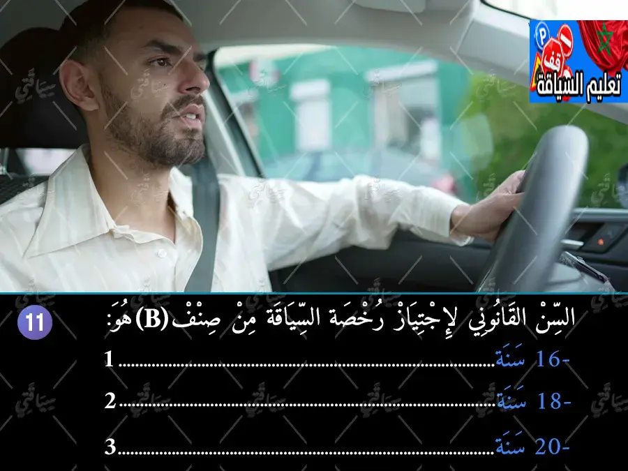
بيّن الجواب
الجواب الصحيح: 2
السن القانوني لاجتياز رخصة السياقة المغربية محدد بموجب القانون في 18 سنة على الأقل، مما يعني أنه لا يمكن التقدم لاجتياز رخصة السياقة من صنف (ب) B إلا عند بلوغ هذا العمر أو بعده. الجواب الصحيح هو رقم 2.
السؤال 12
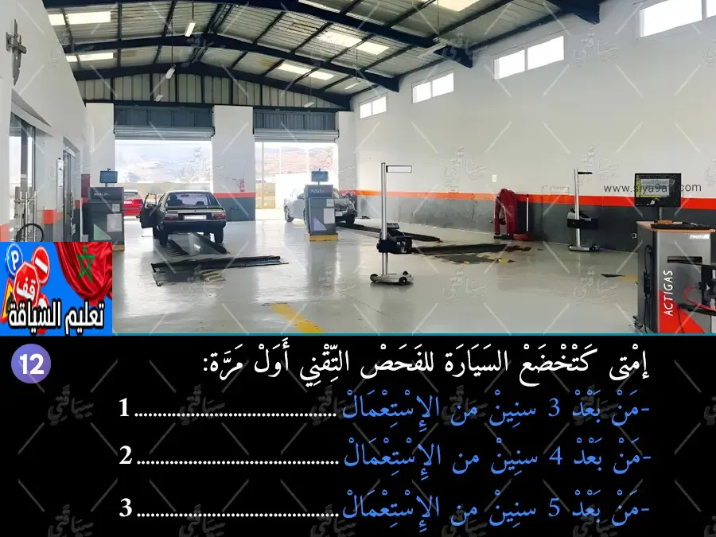
بيّن الجواب
الجواب الصحيح: 3
السيارات الجديدة معفاة من الفحص التقني الإجباري خلال السنوات الخمس الأولى من تاريخ استعمالها. هذا يعني أن السيارة تكون مُعتبرة بحالة جيدة من الناحية التقنية خلال هذه الفترة، مما يجعل الفحص التقني غير إلزامي. بعد مرور 5 سنوات، تصبح السيارة مُلزمة بإجراء الفحص التقني لأول مرة للتأكد من صلاحيتها للاستعمال على الطرقات. الجواب الصحيح هو رقم 3.
السؤال 13
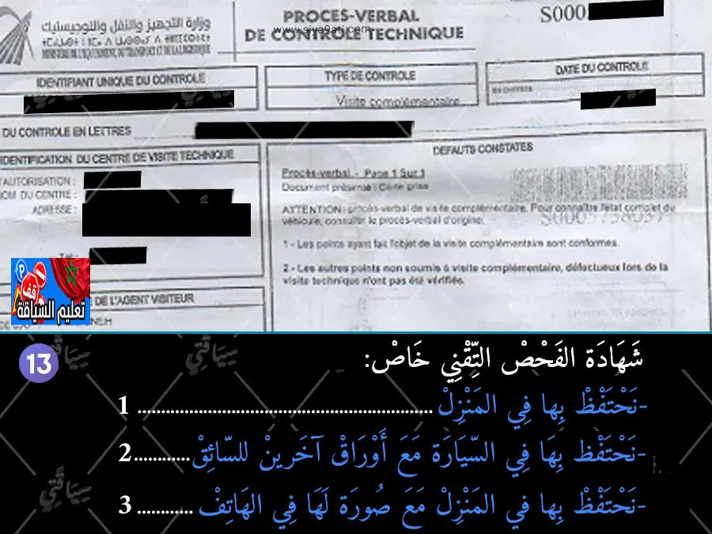
بيّن الجواب
الجواب الصحيح: 2
يُعتبر الاحتفاظ بشهادة الفحص التقني (الفحص الدوري) في المنزل خيارًا خاطئًا لأن السائق قد يُطلب منه تقديم الشهادة في أي وقت عند خضوعه لمراقبة طرقية من طرف السلطات،. كما أن الاكتفاء بصورة لها على الهاتف غير كافٍ وغير معتمد قانونيًا، لأن أعوان السلطة (الشرطة أو الدرك الملكي) يحتاجون إلى شهادة الفحص التقني الأصلية للتحقق من صلاحية السيارة بشكل رسمي. شهادة الفحص التقني تُعدّ من الوثائق الأساسية التي يجب أن تكون بحوزة السائق، وذلك حتى يتمكّن من تقديمها عند أي مراقبة مرورية محتملة أو عند الحاجة لإثبات صلاحية السيارة تقنيًا. وبالتالي يجب الاحتفاظ بها داخل السيارة مع باقي الوثائق الرسمية الخاصة للسائق (مثل رخصة السياقة ووثيقة التأمين والبطاقة الرمادية). الجواب الصحيح هو رقم 2.
السؤال 14
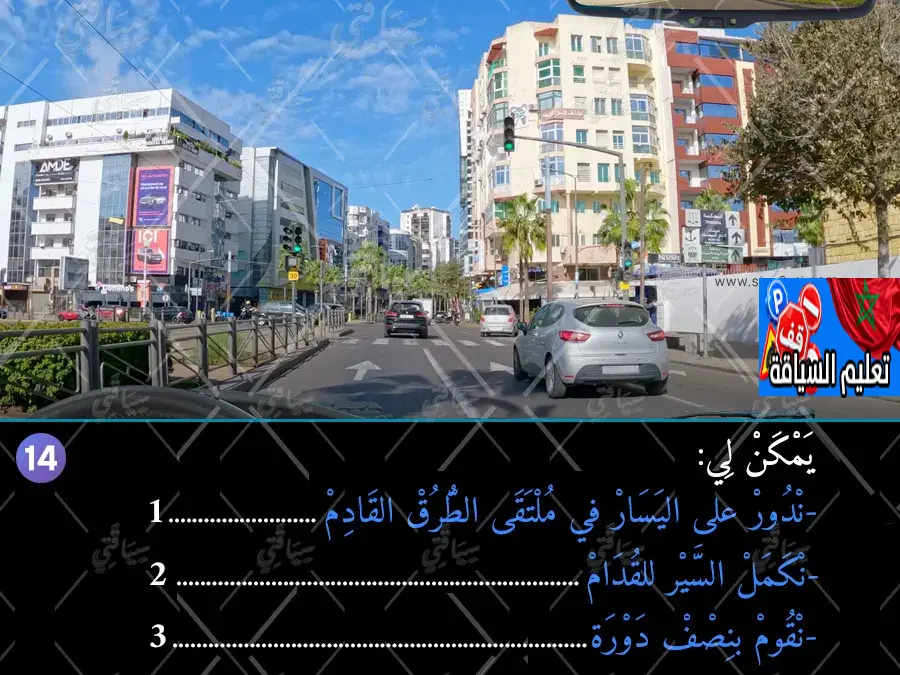
بيّن الجواب
الجواب الصحيح: 2
التشوير الأفقي السهم المرسوم على الأرض يوضح الإجبار، الاتجاه الوحيد المسموح به هو السير للأمام. لا يمكن الإنعطاف على اليسار لأن السهم لا يسمح بالانعطاف لليسار فقط السير للأمام، بالإضافة إلى انه لا توجد إشارة أو مكان مخصص للقيام بنصف دورة. إذن الجواب الصحيح هو رقم 2.
السؤال 15
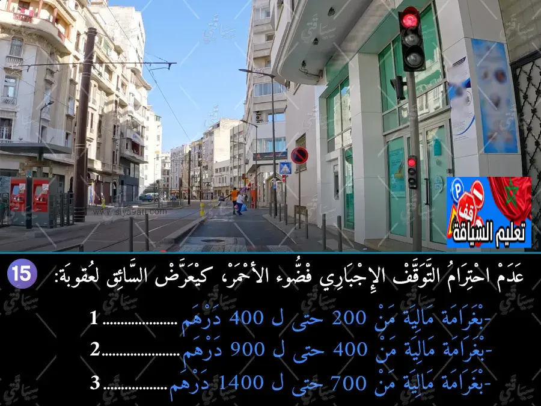
بيّن الجواب
الجواب الصحيح: 3
عدم احترام التوقف الإجباري عند الضوء الأحمر أو علامة قف يُعتبر مخالفة خطيرة تعرّض السائق لعقوبات قانونية. هذه المخالفة تُصنّف ضمن المخالفات من الدرجة الأولى، مما يؤدي إلى خصم 4 نقاط من رصيد رخصة السياقة، إضافة إلى غرامة مالية حسب وقت الأداء. في حالة الأداء الفوري أو خلال نفس اليوم، تكون الغرامة 400 درهم، وإذا تم الأداء قبل مرور 15 يومًا من تاريخ المخالفة، يصبح المبلغ 500 درهم، أما إذا تجاوزت المهلة 15 يومًا دون أن تتجاوز شهراً كاملاً، فإن المبلغ يرتفع إلى 700 درهم. مبلغ المخالفة الأصلي هو 700 درهم، في حال تكرار نفس المخالفة يتضاعف المبلغ ل 1400 درهم. الجواب الصحيح هو رقم 3.
السؤال 16
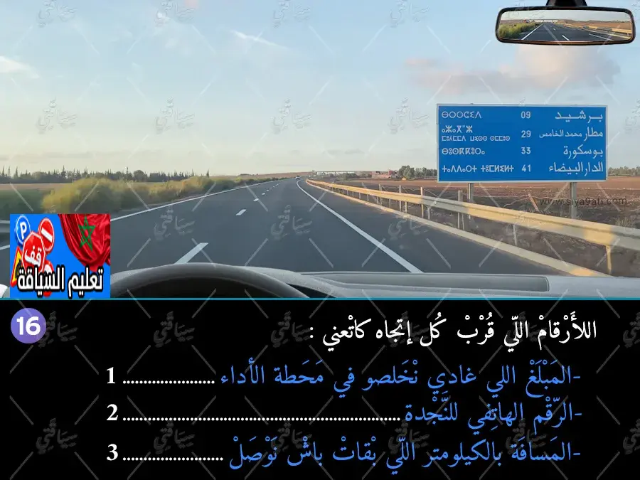
بيّن الجواب
الجواب الصحيح: 3
الأرقام اللي كاينة فاللوحة الطرقية كتعني المسافة بالكيلومترات اللي بقات باش نوصل للوجهة المحددة. فالصورة، الأرقام اللي مكتوبة جنب أسماء المدن بحال برشيد 09، مطار محمد الخامس 29، بوسكورة 33، الدار البيضاء 41 كتعني شحال بقا لنا من كيلومترات باش نوصل لهاد الأماكن. إذن، الجواب الصحيح هو رقم 3، حيث الأرقام اللي كاينة فالإشارة الطرقية كتعبر على المسافة اللي بقات باش نوصل لكل وجهة مكتوبة عليها. إذن الجواب الصحيح هو رقم 3.
السؤال 17
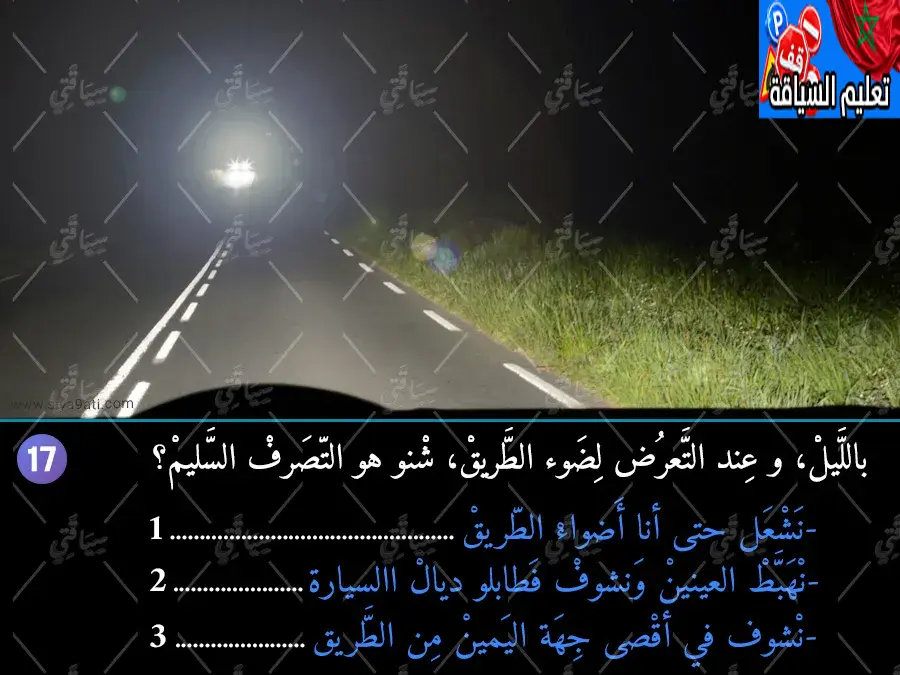
بيّن الجواب
الجواب الصحيح: 3
إلى كنت كنسوق بالليل وتعرضت لضوء قوي جاي من سيارة مقابلة (أضواء الطّريق) أفضل تصرف هو أنني نشوف في أقصى جهة اليمين من الطريق. هاد الطريقة كتساعدني باش نتفادى العمى المؤقت (الإبهار) اللي كيقدر يسبب فقدان التركيز أو انحراف السيارة. أما إذا هبطت عيني وشفت فطابلو السيارة، فهادشي غادي يخلي عيني تتأقلم مع الظلام وأيضا ماغاديش نشوف الطّريق فين كانسوق، ولكن ملي نرجع نشوف للطريق غادي يكون التأثير أقوى، وهذا خطر. كذلك، إستعمال أضواء الطّريق ماشي حل، حيت غادي يزيد من الإبهار للطرف الآخر، وهذا كيعرض الجميع للخطر. إذن، الحل الأفضل والأكثر أماناً هو التركيز على أقصى اليمين ديال الطريق حتى يمشي تأثير الضوء القوي لأضواء الطّريق، باش نبقى محافظ على مساري ونزيد من السلامة أثناء السياقة. إذن الجواب الصحيح هو رقم 3.
السؤال 18
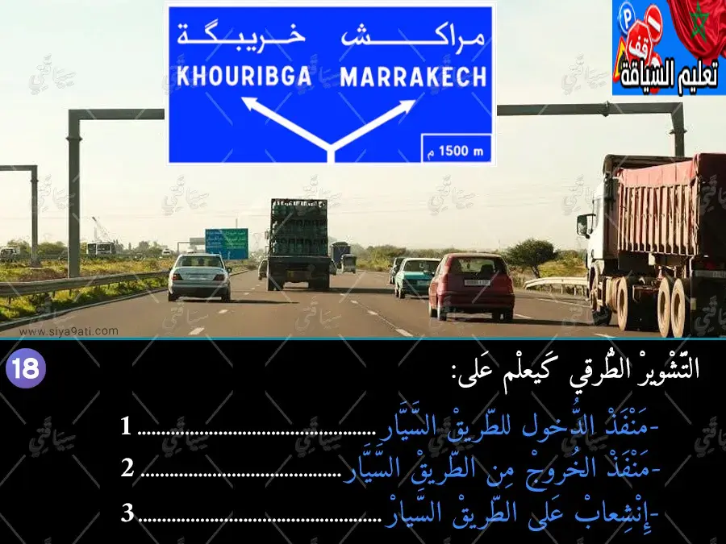
بيّن الجواب
الجواب الصحيح: 3
العلامة الطرقية فالصورة كتعني أن الطريق السيار غادي يتفرع إلى اتجاهين مع البقاء في طريق سيار، بحيث المسار الأيسر كيمشي نحو خريبكة، والمسار الأيمن نحو مراكش. هاد العلامة ما كتعنيش منفذ الدخول للطريق السيار، اللي كيشير لمكان الالتحاق بالطريق، وما كتعنيش منفذ الخروج، اللي كيدل على مغادرة الطريق السيار. ✅ بالتالي، الجواب الصحيح هو رقم 3، لأنه كيتعلق بإنشعاب الطريق.
السؤال 19
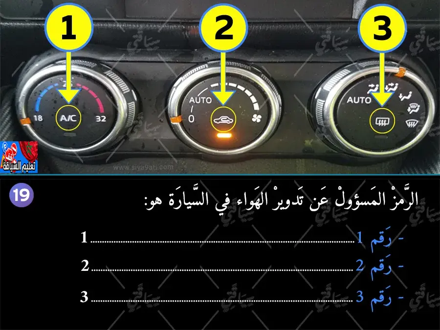
بيّن الجواب
الجواب الصحيح: 2
الزر رقم 1 (A/C): مسؤول على تشغيل وإيقاف نظام التكييف، اللي كيبرد الهواء داخل السيارة. الزر رقم 2 (تدوير الهواء الداخلي): كيخلي الهواء يدور غير داخل السيارة، وما كيدخلش الهواء من الخارج، وهذا مفيد لتجنب الروائح أو التلوث اللي كاين برا. الزر رقم 3 (إزالة الضباب): كيشغل نظام إزالة الضباب من الزجاج الأمامي، باش تتحسن الرؤية بشكل سريع وواضح. إذن لتدوير الزر المسؤول عن تدوير الهواء داخل السيارة هو الزر رقم 2. الجواب الصحيح هو رقم 2.
السؤال 20
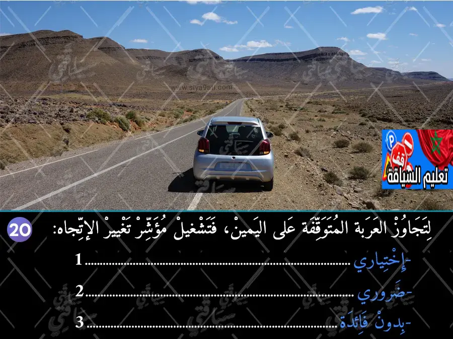
بيّن الجواب
الجواب الصحيح: 2
استعمال مؤشر تغيير الاتجاه (Les clignotants) عند تجاوز عربة متوقفة ماشي اختياري ولا بدون فائدة، بل هو ضروري ومهم للسلامة. هاد المؤشر كيعلم السائقين الآخرين بنيتي في تغيير المسار باش نتجاوز العربة المتوقفة، وكيجنبني الاصطدام مع أي مستعمل آخر للطريق. عدم تشغيله يمكن يسبب حوادث حيث السائقين الآخرين ما غاديش يكونو على علم بالحركة اللي غادي ندير، وبالتالي، استعماله واجب قانوني وماشي مجرد اختيار. إذن الجواب الصحيح هو رقم 2.
السؤال 21
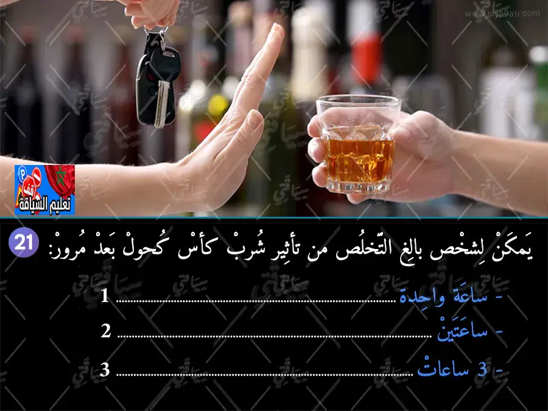
بيّن الجواب
الجواب الصحيح: 3
🟡 (سابقا كان الجواب الصحيح هو ساعة واحدة فقط لكي يتخلص الجسم من تأثير كأس واحد من الكحول، لكن وقع تغيير في هذا السؤال وفي المنصة، وأصبح الجواب الصحيح هو أن الجسم يحتاج إلى 3 ساعات لكي يتخلص من كأس واحد من الكحول). الان وبعد التغيير فإن الجسم، وخصوصاً الكبد، كيهضم الكحول ببطء، ومعدل التخلص من كأس واحد يصل تقريباً حتى 3 ساعات، حسب البنية الجسمانية، الحالة الصحية، ونوع الكحول. ولكن حتى بعد مرور هاد المدة، ممكن يبقى تأثير بسيط كيأثر على التركيز ورد الفعل، وهذا خطير أثناء السياقة. إذن الجواب الصحيح هو رقم 3.
السؤال 22
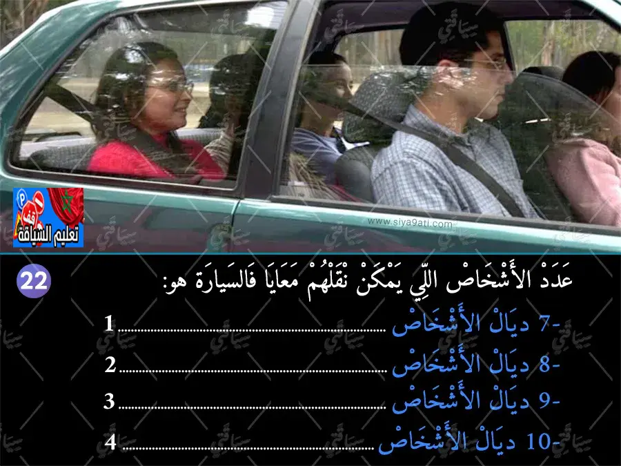
بيّن الجواب
الجواب الصحيح: 1 و 2
رخصة السياقة من صنف (ب) B تسمح لك بنقل عدد أقصى من الركاب يبلغ 8 مقاعد بالإضافة إلى مقعد السائق، أي اي أن المجموع الإجمالي هو 9 مقاعد. لكن بما أن السؤال لا يذكر أن الأمر يتعلق بـ-العدد الأقصى-، فهذا يعني أن أي عدد من الأشخاص في حدود ما تسمح به الرخصة يعتبر جوابًا صحيحًا. ✔️ مثلاً: ممكن نسوق سيارة فيها 7 مقاعد للركاب. يعني أنا + الركاب، المجموع سوف يكون 8 في السيارة. او يمكننا كذلك سياقة سيارة فيها 8 مقاعد للركاب. يعني أنا + الركاب، المجموع سوف يكون 9 في السيارة. بما أن السؤال يقول (بمكن) يعني كلها تعتبر صحيحة، لأنها تدخل ضمن ما هو مسموح به برخصة (ب) (B) إذن الجواب الصحيح هو رقم 1 و 2.
السؤال 23
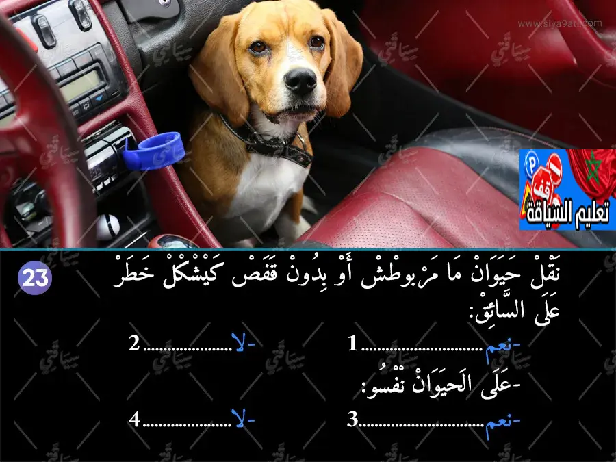
بيّن الجواب
الجواب الصحيح: 1 و 3
ما خاصش الحيوان بحال الكلب ولا القط يكون حر في السيارة، حيت ممكن ما نعرفوش كيفاش غادي يتصرف. يمكن يزعج السائق ولا يتسبب ليه في تشتت الانتباه، وهاد الشي خطر بزاف. ومن جهة أخرى، في حالة حدوث حادثة سير، الحيوان غادي يتجرح، ويمكن حتى يولي في حالة هلع. وداك الشي علاش حسن نحطوه فشي قفص مربوط مزيان، ولا نربطوه فالخلف ديال السيارة. كاينين أجهزة خاصة بالكلاب، بحال حزام أمان مكيّف، كيتركب مع حزام السلامة باش يحمي الحيوان.
الجواب الصحيح هو رقم 1 و 3.السؤال 24
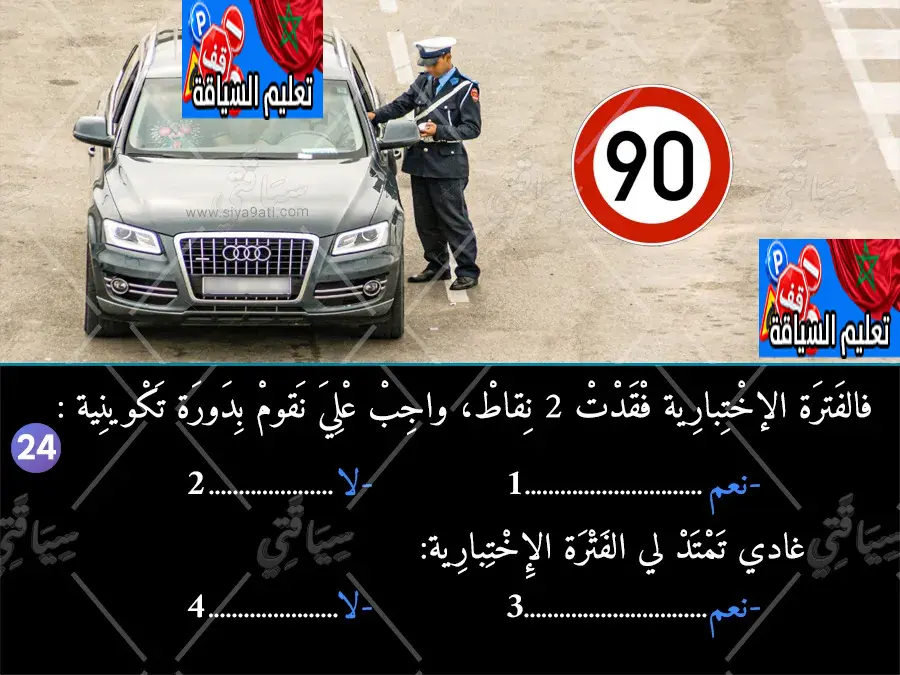
بيّن الجواب
الجواب الصحيح: 2 و 4
رصيد رخصة السياقة خلال الفترة الاختبارية هو 20 نقطة، وإذا ارتكب السائق مخالفة وتم سحب بعض النقاط، فإنه غير ملزم بالخضوع لدورة تكوينية، ما دام لم يفقد ثلثي النقاط. كذلك، تمديد الفترة الاختبارية بسبب ارتكاب مخالفة غير صحيحة، حيث أن الفترة الاختبارية تبقى ثابتة في عامين ولا تتغير حتى لو تم سحب نقاط من الرصيد. إذن، الجواب الصحيح هو 2 و 4.
السؤال 25
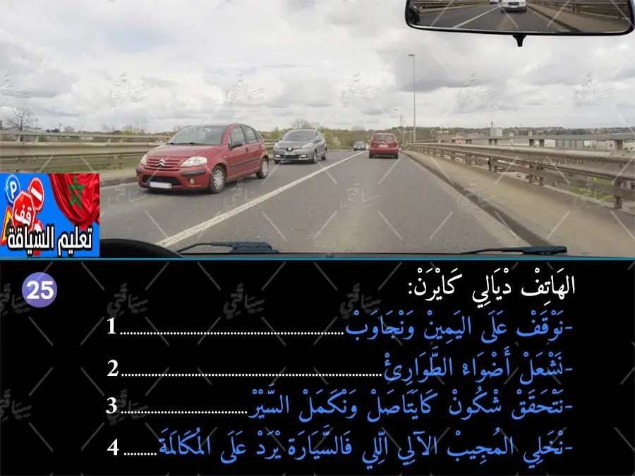
بيّن الجواب
الجواب الصحيح: 4
عند القيادة فوق قنطرة والهاتف يرن، لا يجب التوقف على القنطرة لأن ذلك يشكل خطرًا على السلامة المرورية ويُعتبر مخالفة لأنه سوف أقوم بعرقلة حركة السّير، كما أن تشغيل أضواء الطوارئ دون مبرر ليس مناسبًا في هذه الحالة. أيضًا، التحقق من المتصل أو الرد يدويًا أثناء القيادة يُعد مخالفة خطيرة لأنه يشتت انتباه السائق ويندرج في مخالفة إستعمال الهاتف أثناء السياقة. الحل الأنسب في هذه الحالة هو ترك المجيب الآلي في السيارة يرد على المكالمة، لأنه يتيح للسائق التركيز الكامل على الطريق دون تعريض نفسه أو الآخرين للخطر. الجواب الصحيح هو رقم 4.
السؤال 26
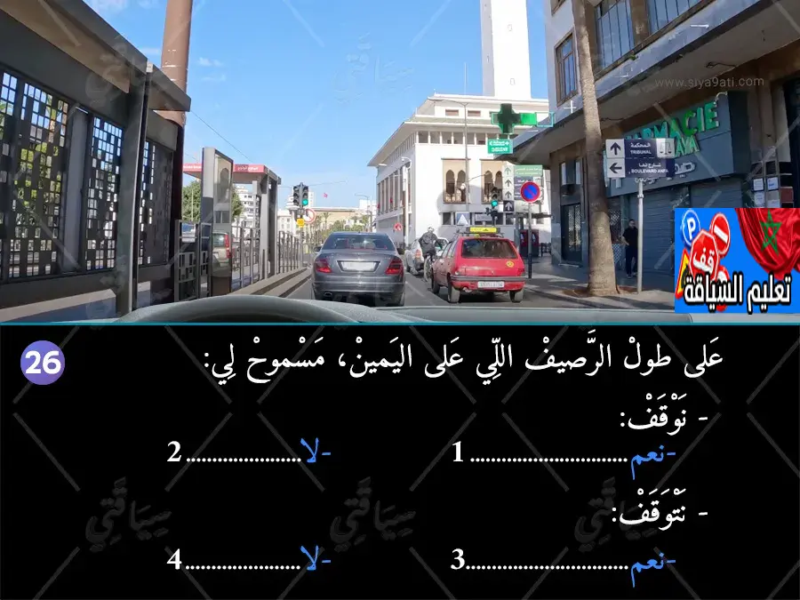
بيّن الجواب
الجواب الصحيح: 1 و 4
العلامة الطرقية اللي كاينة على اليمين كتعني (ممنوع التوقف)، وهذا كيعني أنني ما عنديش الحق نحبس السيارة لفترة طويلة. لكن، يمكن لي الوقوف مؤقتاً باش نُنزل أو نركب شي راكب، أو نوقف السيارة لفترة قصيرة بدون مغادرتها. إذن الجواب الصحيح هو رقم 1 و 4.
السؤال 27
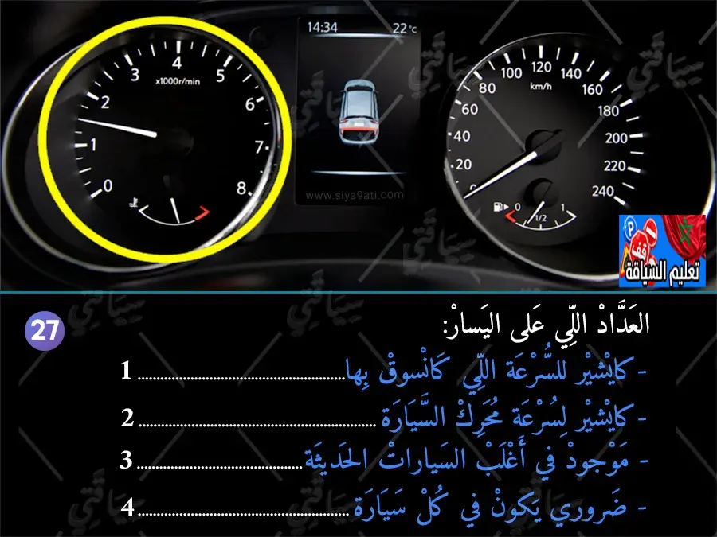
بيّن الجواب
الجواب الصحيح: 2 و 3
عداد دورات المحرك ماشي ضروري يكون فكل سيارة، خلافاً لعداد السرعة اللي واجب قانونياً، ولكن كاين فمعظم السيارات الحديثة. هاد العداد كيساعدنا نعرف بشحال كيدور المحرك فالدقيقة، بوحدة الآلاف. مهم نعرف أن ما كايناش علاقة مباشرة بين سرعة دوران المحرك والسرعة اللي كانسوق بها السيارة، ممكن المحرك يدور بسرعة والسيارة ماشية ببطء، أو العكس. العداد مفيد باش ما نوصلوش لعدد دورات المحرك تكون مرتفعة بزاف اللي تقدر تضر المحرك. وكيساعد كذلك فـ السياقة الاقتصادية، بحيث منين كيوصل العداد لـ 1500 حتى 2000 دورة فالدقيقة، خاصنا نبدلو السرعة باش نقصو من استهلاك البنزين. الجواب الصحيح: 2 و 3 ✅
السؤال 28
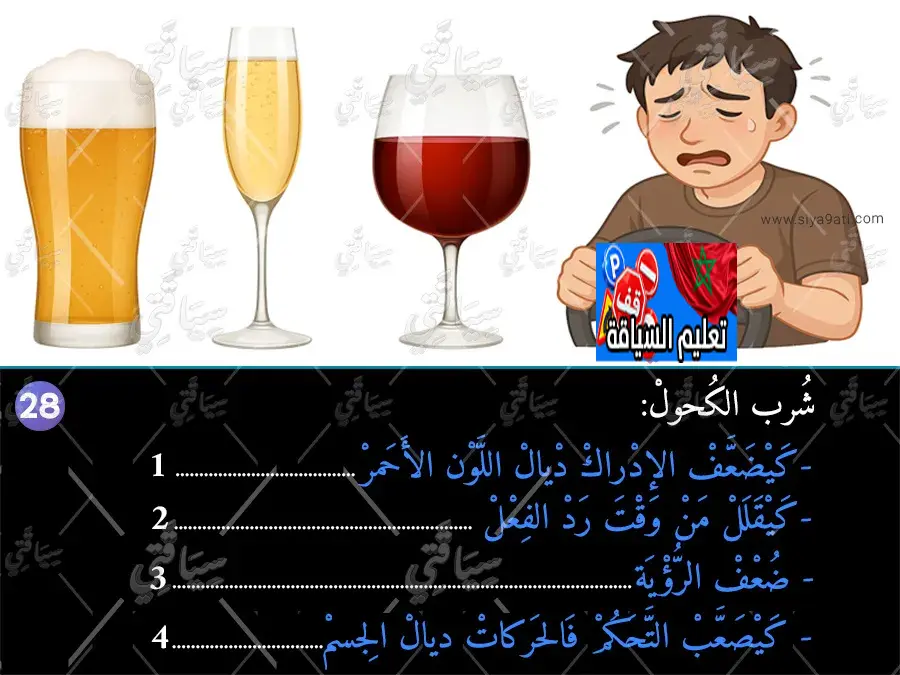
بيّن الجواب
الجواب الصحيح: 1 و 3 و 4
الكحول كيتسبب فضعف إدراك الألوان، وخصوصاً اللون الأحمر اللي كيتأثر أكثر. وهادشي خطير، حيت اللون الأحمر مهم بزاف فالسياقة، كيتستعمل في الإشارات المرورية ، وأضواء الفرامل اللي كتنبه السائقين أن السيارة اللي قدامهم كتوقف. الكحول كيزيد كذلك في تشويش التنسيق بين الحركات، وغير مدرك بشكل كامل الحركات اللي كايقوم السائق بها. وكيخلي الإبهار بالأضواء القوية يدوم مدة أطول بعد مرور السيارة اللي جاية فالاتجاه المعاكس مما يسبب في عدم الرؤية بشكل جيد 🔴 والمعلومة المهمة هي أن الكحول ما كيقللش من وقت رد الفعل، بل بالعكس، كيطول الوقت اللي كيحتاجه السائق باش يتفاعل مع الخطر، وهادشي كيخليه أكثر عرضة للحوادث. إذن الجواب الصحيح هو رقم 1و 3 و4 ✅
السؤال 29
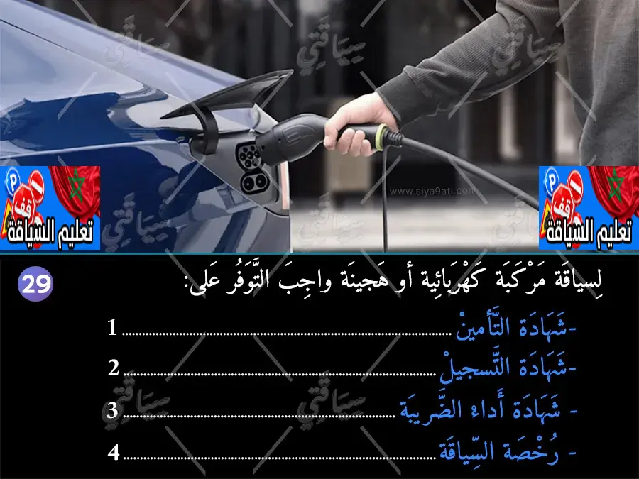
بيّن الجواب
الجواب الصحيح: 1 و 2 و 4
باش تسوق سيارة هجينة أو كهربائية، خاصك تكون متوفر على شهادة التأمين، شهادة التسجيل (البطاقة الرمادية)، ورخصة السياقة، وبالإضافة إلى ذلك، خاص تكون دازت من الفحص التقني إلا كان عمر السيارة أكثر من 5 سنوات. أما بالنسبة لـ الضريبة (الشهادة الضريبية)، فهاد النوع من السيارات معفي منها، لأنو ما كيلوثش البيئة بحال السيارات العادية، وهاد الإعفاء كيدخل في إطار تشجيع السيارات النظيفة بيئياً. ✅ إذن، الجواب الصحيح هو رقم 1 و2 و4.
السؤال 30
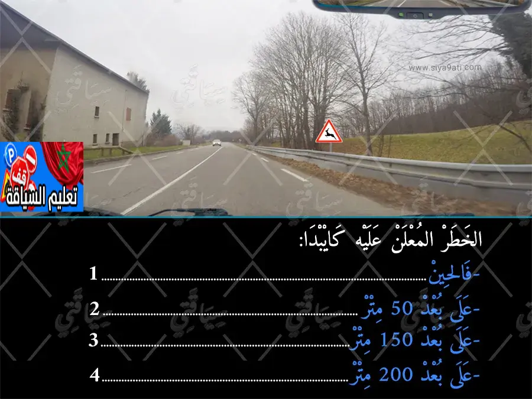
بيّن الجواب
الجواب الصحيح: 3
العلامة الطرقية تُعلن عن خطر مرور الحيوانات المتوحشة، وهذا الخطر قد يكون من جهة اليمين أو اليسار. لذلك، يجب تخفيف السرعة والانتباه لاحتمال مرور الغزال. بما أننا خارج التجمعات السكنية، فإن الخطر يتواجد على بُعد 150 متر. (أما داخل التجمعات السكنية، فإن الخطر يكون على بُعد 50 متر). إذن، الجواب الصحيح هي رقم 3.
السؤال 31
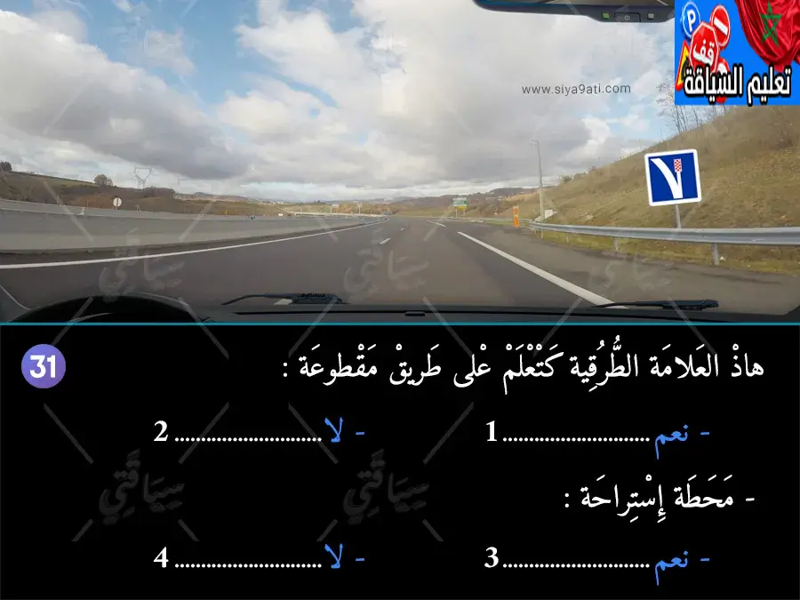
بيّن الجواب
الجواب الصحيح: 2 و 4
هاد العلامة ما كتعني لا طريق مقطوعة ولا محطة استراحة، بل هي علامة إرشادية كتدل على وجود (مسلك نجاة) أو àمسلك النجدة) وهي طريق جانبية خاصة بالشاحنات أو العربات اللي فراملهوم خاسرين أو فقدو السيطرة، خصوصاً فالمناطق المنحدرة. هاد المسلك كيكون فيه مواد خاصة (بحال الحصى أو الرمل) باش توقف السيارة بأمان وتفادي الحوادث. خاص السائق يعرف أن هاد المسلك كيستعمل فقط فالحالات الطارئة وماشي طريق عادي ولا مخرج عام. ✅ إذن، هاد العلامة كتعني وجود مسلك نجاة. إذن الجواب الصحيح هو رقم 2 و 4.
السؤال 32
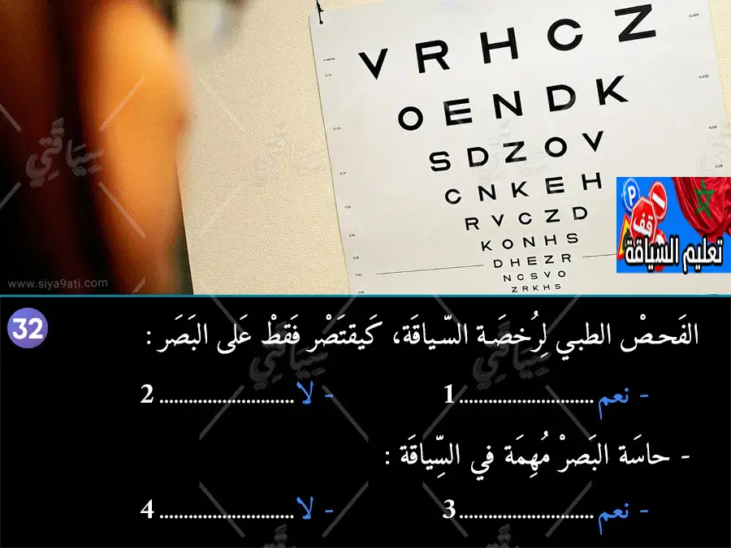
بيّن الجواب
الجواب الصحيح: 2 و 3
الفحص الطبي اللي كيدوزو المترشحين قبل ما يجتازو رخصة السياقة، ماشي غير خاص بحاسة البصر، بل الطبيب كيتفقد كذلك الحالة العقلية للمترشح من خلال الحديث معاه وملاحظة السلوك ديالو. وزيادة على هادشي، الطبيب منين كيهضر معاك كيتأكد حتى واش كتسمع مزيان، ولا عندك ضعف في السمع، لأن السمع مهم هو الآخر فالسياقة، باش تسمع التنبيهات الصوتية، بحال المنبهات ديال السيارات، أو صافرات الإنذار.. بطبيعة الحال، فإن البصر مهم جداً فالسياقة. ✅ إذن، الفحص الطبي شامل وكيشمل البصر، السمع، والحالة العقلية، والجواب الصحيح هو رقم 2 و3.
السؤال 33
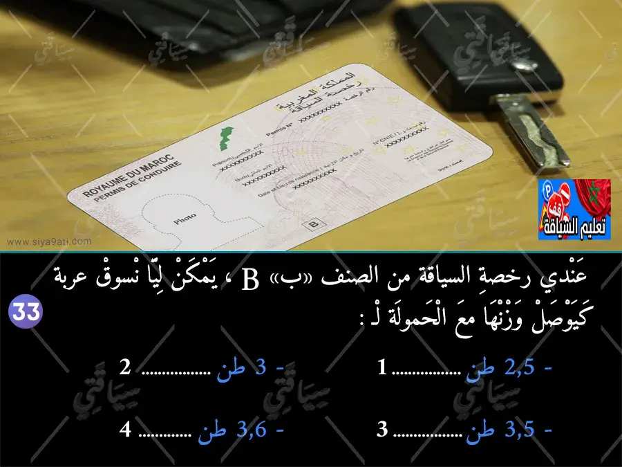
بيّن الجواب
الجواب الصحيح: 1 و 2 و 3
رخصة السياقة صنف (ب) تمكننا من قيادة المركبات التي لا يتجاوز وزنها 3500 كيلوغرام اي 3.5 طن، أي أن اي حمولة أقل او تساوي 3.5 فيمكنني سياقتها. إذن الجواب الصحيح هو رقم 1، 2 و 3.
السؤال 34
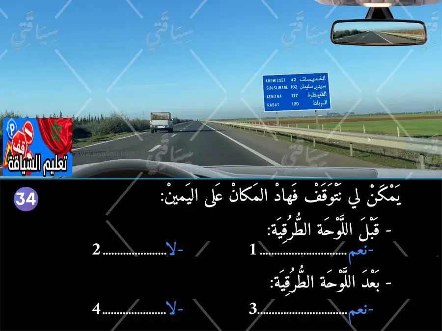
بيّن الجواب
الجواب الصحيح: 2 و 4
العلامة الطّرقية الزرقاء الموجودة على اليمين تشير إلى أننا متواجدون في الطّريق السّيار، وتوضح لنا المسافات المتبقية بالكيلومتر للوصول إلى كل مدينة. في الطّريق الّسيار لا يمكننا الوقوف او التوقف على اليمين إلا في الحالات الإستعجالة أو عند وقوع عطب في السّيارة. العلامة الطّرقية تشير فقط للمسافات المتبقية لكل مدينة، ولا تشير إلى ان التوقف مسموح به. كما ان الوقوف والتوقف على قارعة الطريق السيار أو على شريط التوقف العاجل أو على المسالك الموصلة إلى الطريق السيار، ما عدا في حالة الضرورة القصوى يعتبر مخالفة من الدرجة الثانية و يعاقب عليه بغرامة من خمسمائة (500) إلى ألف (1.000) درهم. إذن الجواب الصحيح هو رقم 2 و 4.
السؤال 35
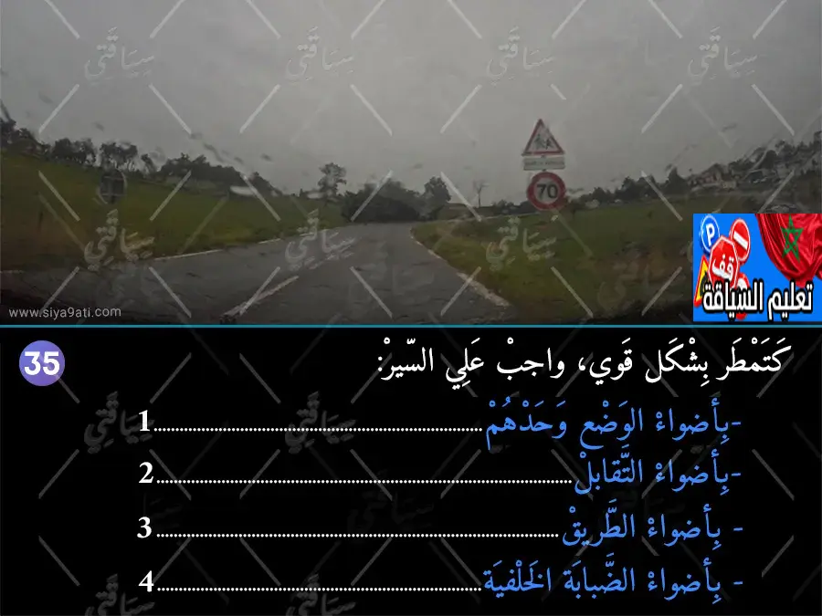
بيّن الجواب
الجواب الصحيح: 2
فاش كتكون الشتا قوية (أمطار غزيرة)، خاصني نشعل أضواء التقابل (feux de croisement) باش نكون باين مزيان عند باقي السائقين. وزيادة على هاد الشي، من الأفضل نشعل حتى أضواء الضباب الأمامية، لأنها كتعطي إنارة قوية كتساعدني نشوف الطريق بوضوح أكثر، خصوصاً فالرؤية الضعيفة. ✅ أما أضواء الوضع بوحدهم ما كافيينش، ولا أضواء الطريق (الضوء العالي) اللي كيعكسو المطر وقد يسببو الإبهار. إذن الجواب الصحيح هو رقم 2.
السؤال 36
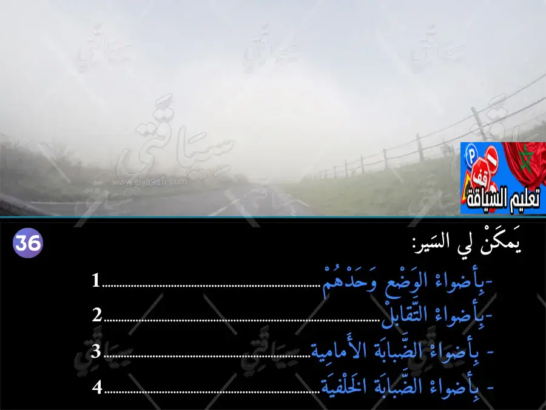
بيّن الجواب
الجواب الصحيح: 2 و 3 و 4
فهاد الحالة، كاين ضباب كثيف اللي كيضعف الرؤية بزاف. باش نشوف مزيان ويشوفوني مستعملي الطريق الآخرين، خاصني نستعمل: أضواء التقابل (feux de croisement) أضواء الضباب الأمامية أضواء الضباب الخلفية ❌ ما يمكنش نستعمل غير أضواء الوضع بوحدهم، حيت ما كيعطيوش إنارة كافية فالضباب، وهاد الشي خطير. أضواء الوضع خاصهم يكونو مرفوقين بأضواء أقوى مناسبة لحالة الضباب، بحال أضواء التقابل والضباب. إذن الجواب الصحيح هو قم 2، 3 و 4.
السؤال 37
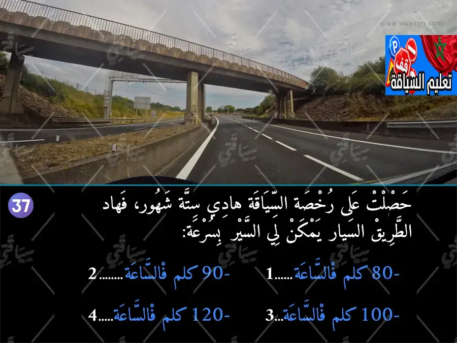
بيّن الجواب
الجواب الصحيح: 1 و 2
بما أنني حصلت على رخصة السياقة منذ 6 أشهر، فإن سرعتي محدودة بـ 90 كلم/الساعة لمدة عامين. على الرغم من أن السرعة القصوى في الطريق السيار هي 120 كلم/الساعة، إلا أنه لا يمكنني السير بهذه السرعة لأنني لا أزال في الفترة الاختبارية لرخصة السياقة. إذن، في هذه الحالة، يمكنني السير بسرعة 80 كلم/الساعة، ويمكنني كذلك السير بسرعة 90 كلم/الساعة. الجواب الصحيح هو رقم 1 ورقم 2.
السؤال 38
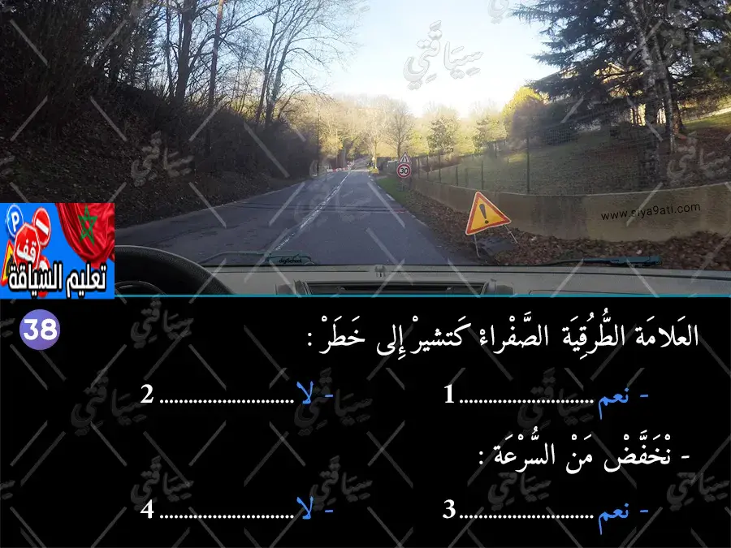
بيّن الجواب
الجواب الصحيح: 1 و 3
هاد اللوحة الصفراء المؤقتة اللي على شكل مثلث، كتعني أن كاين خطر فهاد الطريق، ولكن نوع الخطر ما معروفش بالضبط. بما أنها مؤقتة، فغالباً كاتكون مرتبطة بأشغال، طريق محفرة، ولا شي تغيير مفاجئ. ✅ فهاد الحالة، خاصني نخفف السرعة ونبقى مركز باش ما يوقعليش شي مفاجأة فوسط الطريق. السلامة ديالي كتطلب نكون مستعد نوقف أو نبدل الاتجاه فالحين إذا تطلب الأمر. إذن الجواب الصحيح هو رقم 1 و 3.
السؤال 39
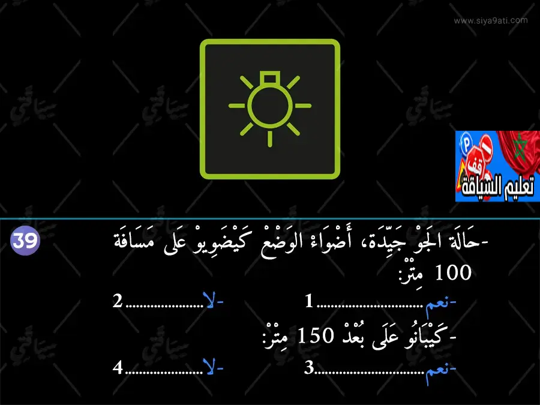
بيّن الجواب
الجواب الصحيح: 2 و 3
أضواء الوضع (veilleuses): توجد في الأمام والخلف، وهي لا توفر إضاءة كافية للسائق لرؤية الطريق يعني لا تقوم بإضاءة الطريق للسائق على مسافة 100 متر. من وظائفها أنها تُلاحظ ولا تُضيء، لونها أبيض وكايبينو عرض السيارة على بعد 150 متر في ظروف جوية صافية، يعني يمكن السائق الاخر يشوف السيارة ديالي على بعد 150 متر. الجواب الصحيح هو رقم 2 و 3.
السؤال 40
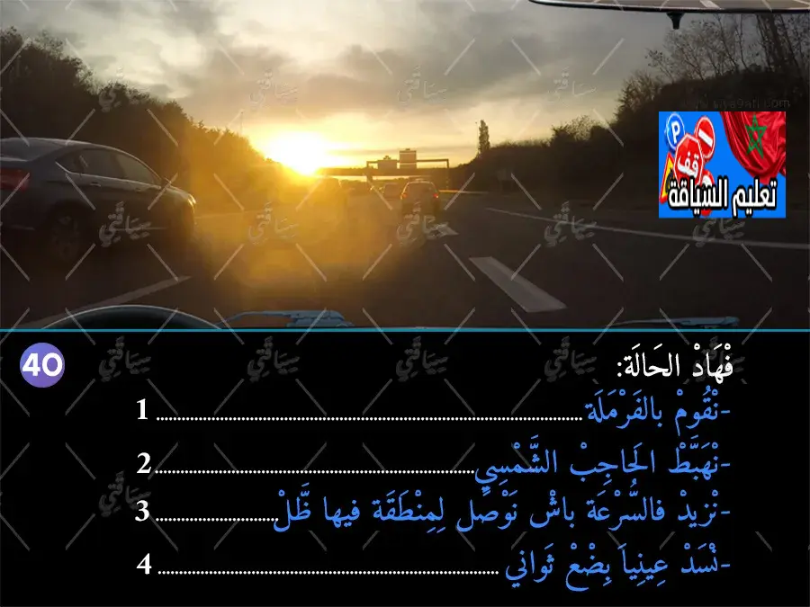
بيّن الجواب
الجواب الصحيح: 2
إلى كنت كنسوق وتعرضت لإبهار بسبب أشعة الشمس، خاصني نعرف كيفاش نتصرف باش نبقى مركز وما نعرض نفسي أو الآخرين للخطر. الفرملة المفاجئة ماشي حل لأنها تقدر تسبب اصطدام من الخلف، وزيادة السرعة باش نوصل لمنطقة ظل كتعرضني لخطر أكبر. كذلك، إغلاق العينين ولو لثواني أثناء السياقة خطير جداً لأنه كيعني فقدان السيطرة على الطريق. الحل الأفضل هو استعمال الحاجب الشمسي (pare-soleil)، اللي كيساعد على تقليل تأثير الإبهار ويحافظ على سلامة الرؤية أثناء القيادة. إذن الجواب الصحيح هو رقم 2.